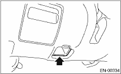
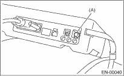

Perform the diagnosis shown in the following DTC table.
When performing the diagnosis not listed in “List of Diagnostic Trouble Code (DTC)”, refer to the item on the drive cycle. 
|
DTC |
Item |
Condition |
|
P0011 |
Intake Camshaft Position - Timing Over-Advanced or System Performance (Bank 1) |
— |
|
P0021 |
Intake Camshaft Position - Timing Over-Advanced or System Performance (Bank 2) |
— |
|
P0031 |
HO2S Heater Control Circuit Low (Bank 1 Sensor 1) |
— |
|
P0032 |
HO2S Heater Control Circuit High (Bank 1 Sensor 1) |
— |
|
P0037 |
HO2S Heater Control Circuit Low (Bank 1 Sensor 2) |
— |
|
P0038 |
HO2S Heater Control Circuit High (Bank 1 Sensor 2) |
— |
|
P0102 |
Mass or Volume Air Flow Circuit Low Input |
— |
|
P0103 |
Mass or Volume Air Flow Circuit High Input |
— |
|
P0107 |
Manifold Absolute Pressure/Barometric Pressure Circuit Low Input |
— |
|
P0108 |
Manifold Absolute Pressure/Barometric Pressure Circuit High Input |
— |
|
P0112 |
Intake Air Temperature Sensor 1 Circuit Low |
— |
|
P0113 |
Intake Air Temperature Sensor 1 Circuit High |
— |
|
P0117 |
Engine Coolant Temperature Circuit Low |
— |
|
P0118 |
Engine Coolant Temperature Circuit High |
— |
|
P0122 |
Throttle/Pedal Position Sensor/Switch “A” Circuit Low |
— |
|
P0123 |
Throttle/Pedal Position Sensor/Switch “A” Circuit High |
— |
|
P0131 |
O2 Sensor Circuit Low Voltage (Bank 1 Sensor 1) |
— |
|
P0132 |
O2 Sensor Circuit High Voltage (Bank 1 Sensor 1) |
— |
|
P0140 |
O2 Sensor Circuit No Activity Detected (Bank 1 Sensor 2) |
— |
|
P0222 |
Throttle/Pedal Position Sensor/Switch “B” Circuit Low |
— |
|
P0223 |
Throttle/Pedal Position Sensor/Switch “B” Circuit High |
— |
|
P0230 |
Fuel Pump Primary Circuit |
— |
|
P0245 |
Turbo/Super Charger Wastegate Solenoid “A” Low |
— |
|
P0327 |
Knock Sensor 1 Circuit Low (Bank 1 or Single Sensor) |
— |
|
P0328 |
Knock Sensor 1 Circuit High (Bank 1 or Single Sensor) |
— |
|
P0335 |
Crankshaft Position Sensor “A” Circuit |
— |
|
P0340 |
Camshaft Position Sensor “A” Circuit (Bank 1 or Single Sensor) |
— |
|
P0345 |
Camshaft Position Sensor “A” Circuit (Bank 2) |
— |
|
P0413 |
Secondary Air Injection System Switching Valve “A” Circuit Open |
— |
|
P0418 |
Secondary Air Injection System Control “A” Circuit |
— |
|
P0458 |
Evaporative Emission System Purge Control Valve Circuit Low |
— |
|
P0462 |
Fuel Level Sensor “A” Circuit Low |
— |
|
P0463 |
Fuel Level Sensor “A” Circuit High |
— |
|
P0502 |
Vehicle Speed Sensor “A” Circuit Low Input |
— |
|
P0503 |
Vehicle Speed Sensor “A” Intermittent/Errattic/High |
— |
|
P0512 |
Starter Request Circuit |
— |
|
P0513 |
Incorrect Immobilizer Key |
— |
|
P0519 |
Idle Air Control System Performance |
— |
|
P0600 |
Serial Communication Link |
— |
|
P0604 |
Internal Control Module Random Access Memory (RAM) Error |
— |
|
P0605 |
Internal Control Module Read Only Memory (ROM) Error |
— |
|
P0607 |
Control Module Performance |
— |
|
P0638 |
Throttle Actuator Control Range/Performance (Bank 1) |
— |
|
P0691 |
Fan 1 Control Circuit Low |
— |
|
P0700 |
Transmission Control System (Mil Request) |
— |
|
P0851 |
Park/Neutral Switch Input Circuit Low (AT Model) |
— |
|
P0852 |
Park/Neutral Switch Input Circuit High (AT Model) |
— |
|
P1160 |
Return Spring Failure |
— |
|
P1410 |
Secondary Air Injection System Switching Valve Stuck Open |
— |
|
P1518 |
Starter Switch Circuit Low Input |
— |
|
P1560 |
Back-up Voltage Circuit Malfunction |
— |
|
P1570 |
Antenna |
— |
|
P1571 |
Reference Code Incompatibility |
— |
|
P1572 |
IMM Circuit Failure (Except Antenna Circuit) |
— |
|
P1574 |
Key Communication Failure |
— |
|
P1576 |
EGI Control Module EEPROM |
— |
|
P1577 |
IMM Control Module EEPROM |
— |
|
P2006 |
Intake Manifold Runner Control Stuck Closed (Bank 1) |
— |
|
P2007 |
Intake Manifold Runner Control Stuck Closed (Bank 2) |
— |
|
P2008 |
Intake Manifold Runner Control Circuit / Open (Bank 1) |
— |
|
P2009 |
Intake Manifold Runner Control Circuit Low (Bank 1) |
— |
|
P2011 |
Intake Manifold Runner Control Circuit / Open (Bank 2) |
— |
|
P2012 |
Intake Manifold Runner Control Circuit Low (Bank 2) |
— |
|
P2016 |
Intake Manifold Runner Position Sensor / Switch Circuit Low (Bank 1) |
— |
|
P2017 |
Intake Manifold Runner Position Sensor / Switch Circuit High (Bank 1) |
— |
|
P2021 |
Intake Manifold Runner Position Sensor / Switch Circuit Low (Bank2) |
— |
|
P2022 |
Intake Manifold Runner Position Sensor / Switch Circuit High (Bank 2) |
— |
|
P2088 |
OCV Solenoid Valve Signal A Circuit Open (Bank 1) |
— |
|
P2089 |
OCV Solenoid Valve Signal A Circuit Short (Bank 1) |
— |
|
P2092 |
OCV Solenoid Valve Signal A Circuit Open (Bank 2) |
— |
|
P2093 |
Intake Camshaft Position Actuator Control Circuit High (Bank 2) |
— |
|
P2101 |
Throttle Actuator Control Motor Circuit Range/Performance |
— |
|
P2102 |
Throttle Actuator Control Motor Circuit Low |
— |
|
P2109 |
Throttle/Pedal Position Sensor “A” Minimum Stop Performance |
— |
|
P2122 |
Throttle/Pedal Position Sensor/Switch “D” Circuit Low Input |
— |
|
P2123 |
Throttle/Pedal Position Sensor/Switch “D” Circuit High Input |
— |
|
P2127 |
Throttle/Pedal Position Sensor/Switch “E” Circuit Low Input |
— |
|
P2128 |
Throttle/Pedal Position Sensor/Switch “E” Circuit High Input |
— |
|
P2135 |
Throttle/Pedal Position Sensor/Switch “A”/“B” Voltage Correlation |
— |
|
P2138 |
Throttle/Pedal Position Sensor/Switch “D”/“E” Voltage Correlation |
— |
|
P2228 |
Barometric Pressure Circuit Low |
— |
|
P2229 |
Barometric Pressure Circuit High |
— |
|
P2432 |
Secondary Air Injection System Air Flow /Pressure Sensor Circuit Low |
— |
|
P2433 |
Secondary Air Injection System Air Flow /Pressure Sensor Circuit High |
— |
|
P2444 |
Secondary Air Injection System Pump Stuck On |
— |
|
P2503 |
Charging System Voltage Low |
— |
1. PREPARATION FOR THE INSPECTION MODE
1. Check that the battery voltage is 12 V or more and approx. half of fuel remains [20 — 40 L (5.3 — 10.6 US gal, 4.4 — 8.8 Imp gal)].
2. Lift-up the vehicle using a garage jack and place it on rigid racks, or drive the vehicle onto free rollers.
WARNING:
• Before raising the vehicle, ensure parking brakes are applied.
• Do not use a pantograph jack in place of a rigid rack.
• Secure a rope or wire to the front or rear towing hooks to prevent the lateral runout of front wheels.
• Do not abruptly depress/release clutch pedal or accelerator pedal during works even when the engine is operating at low speeds since this may cause vehicle to jump off free rollers.
• In order to prevent the vehicle from slipping due to vibration, do not place any wooden blocks or similar items between the rigid racks and vehicle.
• Since the rear wheels will also rotate, do not place anything near them. Also, make sure that nobody goes in front of the vehicle.
|
(A) |
Rigid racks |
|
(B) |
Free rollers |
1. Warm-up the engine.
2. Prepare the Subaru Select Monitor kit.

3. Connect the diagnosis cable to the Subaru Select Monitor.
4. Insert the cartridge to the Subaru Select Monitor.

5. Connect the test mode connector (A) located at the lower portion of instrument panel (on the driver’s side).
|
(A) |
Test mode connector |
6. Connect the Subaru Select Monitor to data link connector located in the lower portion of the instrument panel (on the driver’s side).

CAUTION:
Do not connect any scan tools except the Subaru Select Monitor or general scan tool.
7. Turn the ignition switch to ON (engine OFF) and Subaru Select Monitor switch to ON.

|
(A) |
Power switch |
8. On the «Main Menu» display screen, select {Each System Check} and press the [YES] key.
9. On the «System Selection Menu» display screen, select {Engine Control System} and press the [YES] key.
10. Press the [YES] key after the information of engine type has been displayed.
11. On the «Engine Diagnosis» display screen, select {D Check} and press the [YES] key.
12. When the “Perform Inspection (Dealer Check) Mode” is shown on the screen, press the [YES] key.
13. Perform subsequent procedures as instructed on the display screen.
• If trouble still remains in the memory, the corresponding DTC appears on the display screen.
NOTE:
• For detailed operation procedure, refer to the “SUBARU SELECT MONITOR OPERATION MANUAL”.
• For details concerning DTC, refer to “List of Diagnostic Trouble Code (DTC)”.
• Release the parking brake.
• The speed difference between front and rear wheels may illuminate the ABS warning light, but this does not indicate a malfunction. When engine control diagnosis is finished, perform the ABS memory clearance procedure of the self-diagnosis system.
1. Warm-up the engine.
2. Connect the test mode connector (A) located at the lower portion of instrument panel (on the driver’s side).
3. Connect the general scan tool to data link connector located in the lower portion of the instrument panel (on the driver’s side).
CAUTION:
Do not connect any scan tools except the Subaru Select Monitor or general scan tool.
4. Start the engine.
NOTE:
• Make sure the select lever is placed in the “P” position before starting. (AT model)
• Depress the clutch pedal when starting engine. (MT model)
5. Using the select lever or shift lever, turn the “P” position switch and “N” position switch on.
6. Depress the brake pedal to turn the brake switch ON. (AT model)
7. Keep the engine speed in 2,500 — 3,000 rpm range for 40 seconds.
8. Place the selector lever or shift lever in D range (AT model) or 1st gear (MT model) and drive the vehicle at 5 to 10 km/h (3 to 6 MPH).
NOTE:
• For AWD model, release the parking brake.
• The speed difference between front and rear wheels may illuminate the ABS warning light, but this indicates no malfunctions. When engine control diagnosis is finished, perform the ABS memory clearance procedure of the self-diagnosis system.
9. Using the general scan tool, check for DTC and record the result(s).
NOTE:
• For detailed operation procedure, refer to the general scan tool operation manual.
• For details concerning DTC, refer to “List of Diagnostic Trouble Code (DTC)”.